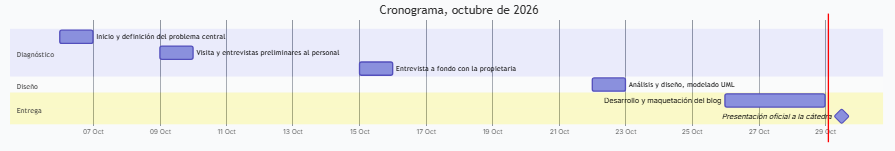

Marco teórico / Planificación
MARCO TEÓRICO · 08
Cronograma de actividades
Planificación y distribución de las etapas de diagnóstico, diseño y entrega en octubre de 2026.
Cronograma, octubre de 2026
Las actividades se distribuyen a lo largo del mes de octubre de 2026, abarcando desde la identificación del problema hasta la presentación oficial:

Detalle de actividades
| Fecha | Actividad |
|---|---|
| 6 de octubre | Inicio del proyecto. Se identifica y define el problema central. |
| 9 de octubre | Visita a la farmacia y entrevistas preliminares a los empleados. |
| 15 de octubre | Entrevista a fondo con la propietaria. |
| 22 de octubre | Análisis y diseño: estructura documental, abstracción de datos y modelado UML. |
| 26 al 28 de octubre | Desarrollo, diseño y maquetación del blog o sitio web. |
| 29 de octubre | Presentación oficial del blog y sitio web a la cátedra. |